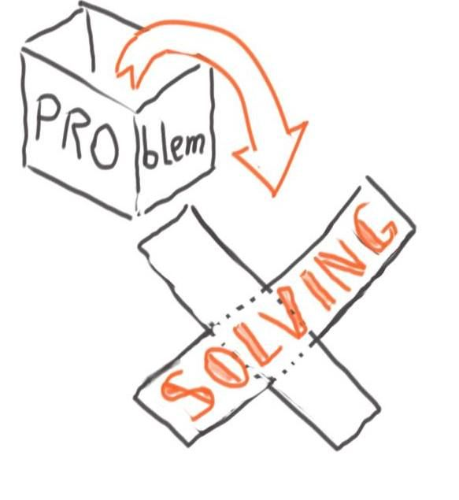

Name: Chinnomt
Class: 9B
Subject: Business Studies
This is a website about the skills I learned in Business Studies class this year. Below is a list of skills and what I learned from them.
I learned how to break a big problem into smaller parts and think about it step by step. This makes hard questions easier to answer.
My Experience: At first, my mind and thinking were chaotic and disorganized. My thoughts would go off uncontrollably, and this reflected heavily in my speeches. I struggled to express the ideas I wanted to share with the audience. But in this class, after reflecting on my teacher's comments, I can now say that I have become a much more organized and clear thinker. :)
I learned how to speak in front of the class with a clear point, good reasons, and a calm voice so people understand me.
My Experience: This skill is directly connected to the previous one. By reflecting on my teacher's notes and organizing my thinking, my speeches became more understandable and concise. This is one of the most important skills for an entrepreneur and in life generally. The ability to express and share your ideas and feelings clearly and thoughtfully, so that the listener receives them flawlessly, is a superior advantage over someone who cannot express themselves meaningfully.
I learned to look at a problem carefully and find the real cause instead of just guessing.
My Experience: As I worked through the tasks in the textbook and the homework given by the teacher, I naturally stumbled upon many problems throughout my progress this year. Business Studies tasks especially require a clear eye for detail and logical thinking. These skills are incredibly useful in real life too. For example, when managing a budget, resolving a conflict at work, or deciding whether to invest in something. You develop these skills in Business Studies because, unlike most other subjects, it is closer to real life than almost anything else you study in school.

I learned to compare different ideas and choose the one that works best for the situation.
My Experience: The Business Studies syllabus gave me a variety of solutions and methods for problems that I may or may not face in the future. But not every method is useful in every situation. For example, Just-in-Time supplying would be wasteful in batch production as resources would sit idle, but it works exceptionally well in flow production, where an uninterrupted flow of resources is needed to maintain a continuous flow of products.
I learned that there is usually more than one way to solve something, so I should always think of other options too.
My Experience: In Business Studies, I learned that there is rarely just one answer to a problem. Before settling on a solution, it is important to explore all available options and weigh them against each other. This way of thinking has changed how I approach challenges, not just in class but in everyday life too. Considering alternatives means you are less likely to make rushed decisions and more likely to find the best possible outcome.
I learned how to listen to others, share tasks, and work together to finish a project.
My Experience: In Business Studies, you often have to work as a team. Because becoming successful is not a solo endeavor. Behind every great business is a group of people who communicate well, trust each other, and divide responsibilities wisely. Through group tasks in class, I learned how to listen to others' ideas, contribute my own, and work toward a shared goal. These are skills that every future employer looks for, and ones that will stay with me long after school.
Business Studies taught me much more than just theory. It shaped the way I think, speak, and work with others. I learned to organize my thoughts, express my ideas clearly, analyze problems with a sharp eye, choose the best solutions, consider all alternatives before deciding, and collaborate effectively as part of a team. These are not just academic skills. They are life skills that entrepreneurs, professionals, and leaders rely on every day. This subject, more than any other, has prepared me for the real world.❤︎
Chinnomt-9b-2026